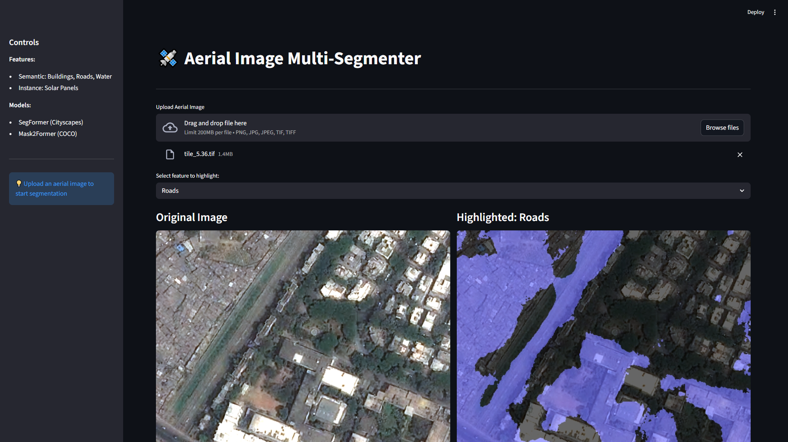
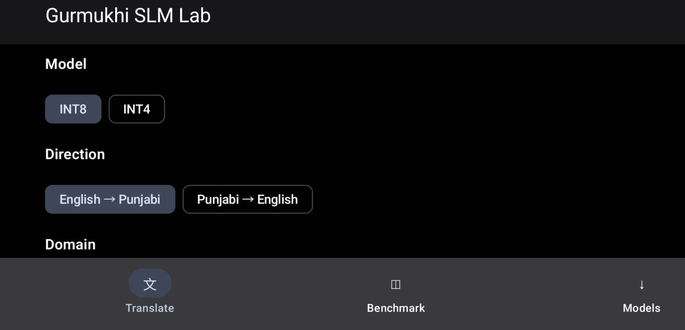
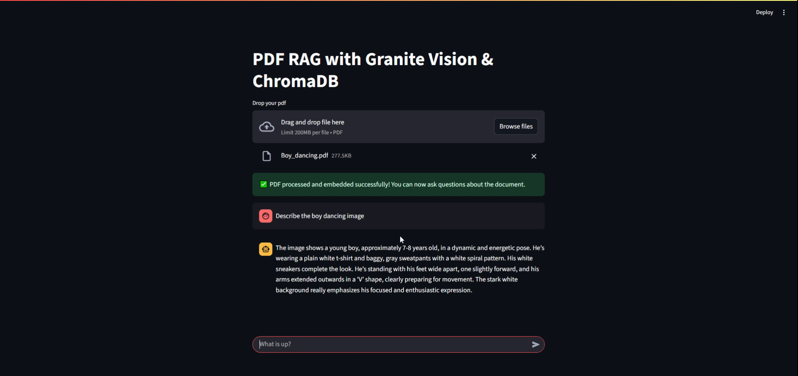
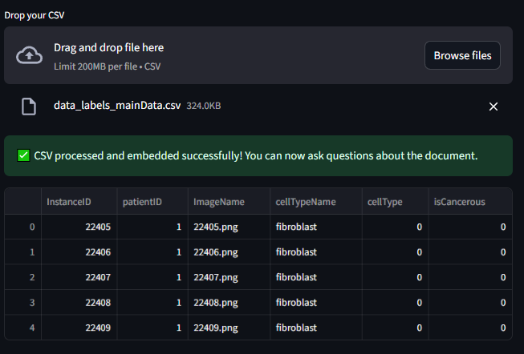
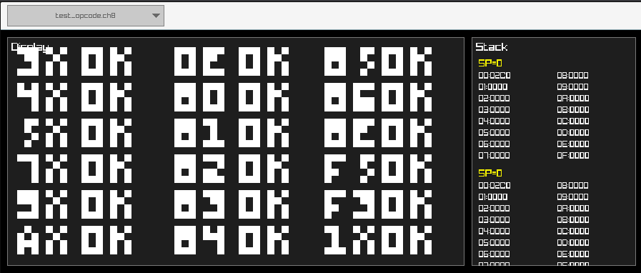

Aerial AI
Semantic and instance segmentation for buildings, roads, water, and solar panels in aerial imagery.
SegFormer / Mask2Former / PyTorch / Streamlit
AI and software engineer building retrieval, vision, and systems software.
Master of Artificial Intelligence, RMIT. Google Summer of Code contributor to FreeBSD and QEMU.
Five projects across applied AI, computer vision, data tools, and low-level systems.

Semantic and instance segmentation for buildings, roads, water, and solar panels in aerial imagery.

A compact English and Punjabi translation system with a custom tokenizer, Transformer models, and teacher distillation.

A local retrieval pipeline that understands text and visual content inside uploaded PDFs.

Natural-language chart generation from CSV data using local language models.

A browser-playable CHIP-8 emulator built in C and compiled to WebAssembly.
Strong foundations, evaluated models, and software that remains clear from data preparation through delivery.
Software that stays legible from the user workflow down to the runtime.
Applied AI grounded in evaluation, useful interfaces, and local-first tooling.
Exploration and presentation layers that make technical work understandable.
Open source systems engineering and postgraduate study in artificial intelligence.
Postgraduate study spanning machine learning, computer vision, language models, and applied software projects.
Implemented AArch64 and RISC-V support in QEMU's FreeBSD user-mode emulation and submitted patches through upstream review.
Undergraduate computer science study at SRM Institute of Science and Technology.
Have an AI, systems, or software problem worth solving?
ContactHero artwork: Girl with a Pearl Earring, Johannes Vermeer, circa 1665. Public domain.
{kind=link}